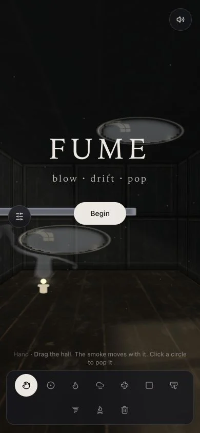
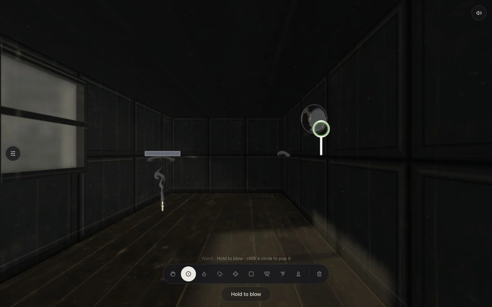
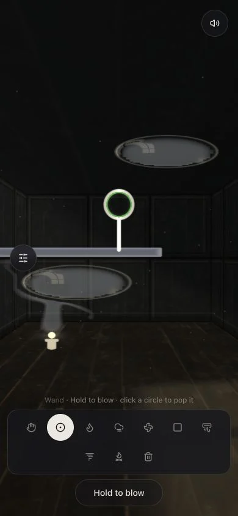
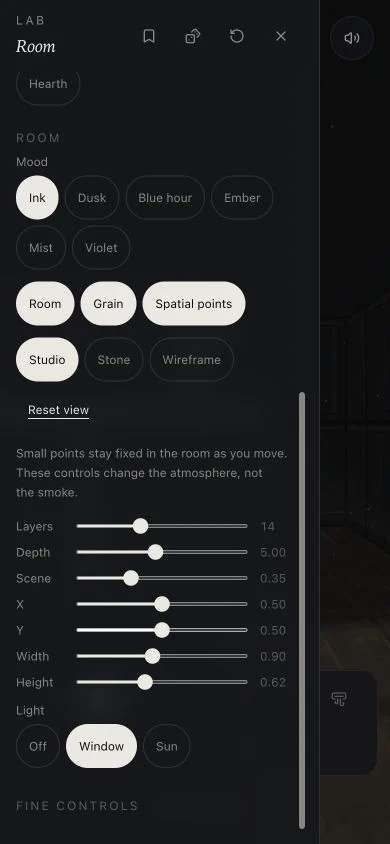
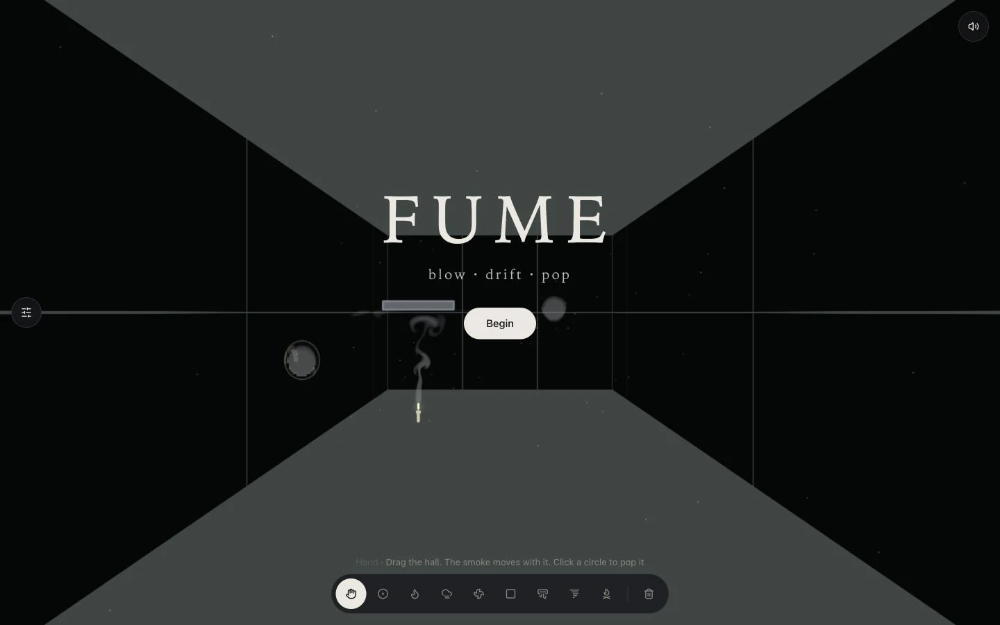
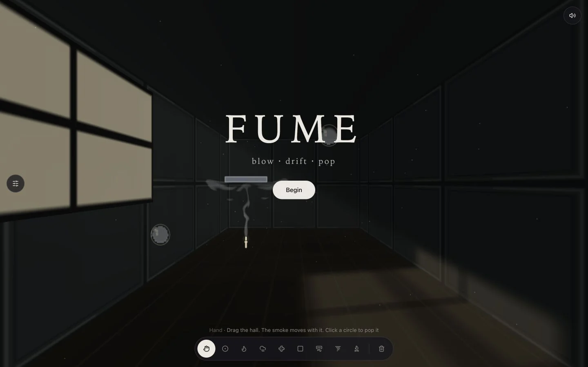
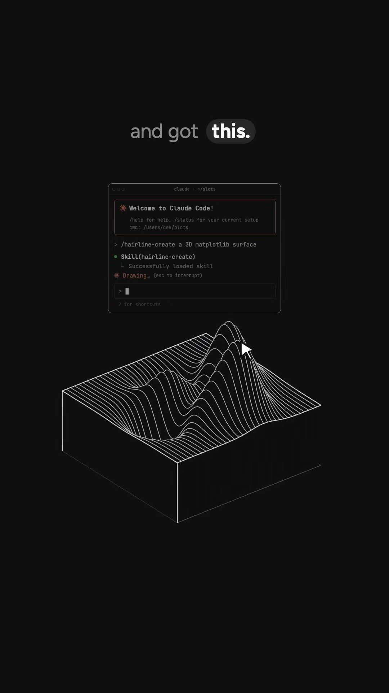

Fume: walk through the link
“That smoke simulation was perfect.”
“Low poly textures … really cheap… Rays are amazing!”
Open the local Fume preview
Local only · 11 October 2026codex/fume-atmosphere · base 1864ab7390 × 844 and 1440 × 900
People: Petr returning to the simulation he liked, and a new visitor opening Fume for the first time. This is an anonymous local toy: no accounts, invented people, email or admin workflow. The smoke and presets are real app behavior.
1. Open → Begin

Phone · first visitSees: FUME, “blow · drift · pop”, a running room and one Begin button.
Taps: Begin. The title clears and the hand tool remains selected.
Could get stuck: On narrow screens, the inherited scene projection stretches smoke-filled circles. This is still visible. It is not a regression introduced by the material maps.
2. Hand → Wand → hold to blow

Desktop · after moving the room and blowing at the pointer
Phone · all tools reachableSees: Thin candle smoke, fixed spatial points, subtle wood grain, recessed window glass and warm shafts. The room, devices and smoke move together under the original projection.
Taps: Drag with Hand, choose Wand, then hold in the canvas or use Hold to blow. A desktop hold at (940, 390) left the wand at that location after camera movement.
Could get stuck: The tool icons still require their short hints for discovery. Filled bubbles retain the original gray smoke; this pass is not a new soap-film physics model.
3. Lab → atmosphere

Phone · atmosphere controlsSees: Studio, Stone and Wireframe; a separate Spatial points switch; Reset view; and Window light. Original simulation controls, numeric inputs, presets and randomizers remain.
Taps: Change the room style, hide the points or reset the camera. Turning Light off removes the shafts; turning Window back on restores them.
Could get stuck: On the phone the atmosphere controls are below the simulation controls, so they require one scroll. The scroll track is now styled for the dark room.
Optional wireframe view

Optional presentation · not the default room4. Flat surfaces → material detail

Before the latest correction · flat window and wallsNow · same accepted rays, new surfacesThe exact visual target is Petr's attached Fume image. This interactive room does not yet match its photorealism.
The saved contour reference was @speedy_devv's Hairline reel, found in the local Jev index. Its terrain appears at 23.4 seconds. Hairline by Lucas Marques is the underlying library.
See the exact contour frame

Cached reel · inspected offlineFive frictions addressed
- The loved smoke was changed. → Restored and protected 20 simulation files, smoke shading and game timing.
- Dust looked like amorphous fog. → Small fixed points at four depths; camera motion supplies parallax; optional switch.
- The room looked flat and cheap. → Scanned wood detail, normal maps, shaped moulding, recessed glass and textured floor. Approved rays remain identical.
- Phone tools disappeared off the side. → The dock wraps into reachable rows; the lab has a visible dark scroll track and Reset view.
- Extra decoration could delay the simulation. → Smoke starts with neutral materials; local maps arrive asynchronously with bounded downloads and disposal cancellation. Retina mip selection corrected.
| Step | Before | Now |
|---|
| Open | Competing experiment risked changing behavior | One preserved engine; optional materials do not gate startup |
| Move | Large blurry dust blobs | Fixed, small depth markers |
| Look around | Flat beige window and smooth walls | Textured painted wood and recessed glass; accepted light unchanged |
| Use phone tools | Horizontal overflow | Wrapped controls |
Evidence and practical limits
Typecheck and production build passed. The local browser showed no shader or JavaScript errors during the final walkthrough. Source preservation passed using node scripts/check-preserved-smoke.mjs. The independent review found and prompted fixes for startup gating, bitmap cleanup and Retina texture detail.
Frame time has not been benchmarked. The maps use about 21.3 MiB of GPU memory and add texture samples to the existing compositor, not another simulation or rendering framework. The inherited full test runner has missing export-template dependencies and is not claimed green.
The mobile circle distortion remains. The Blender dual-color smoke experiment and alternative engine remain parked after Petr rejected the rebuild. No deployment or push occurred.
Read the interpretation audit and all 23 original user messages. Capture steps are saved beside this page in capture.cua.js. Original screenshots were converted to WebP for this report.
From Petr: nothing is required to run the local preview; visual acceptance remains his choice.